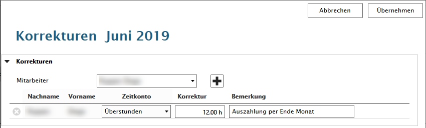

Monatsübersicht
Über den Menüpunkt 'Monatsübersicht' wird eine Monatsübersicht angezeigt. Aus dieser kann zu 'Zeiterfassung' und zurück gewechselt werden.
Monatsübersicht
FlexSelect (1)
Für die Anzeige in der 'Monatsübersicht' wählen Sie im FlexSelect einen Mitarbeiter, das Jahr und den Monat aus.
Übertrag vom Vormonat (2)
Saldo Gleitzeit | Saldo Überstunden | Saldo Ferien vom Vormonat
Aktueller Monat (3)
Arbeitszeit | Überstunden | Überstunden Zuschläge | Einsatz Überstunden | Einsatz Überstunden Zuschläge
Korrekturen aktueller Monat (4)
Gleitzeit plus | Gleitzeit minus | Überstunden plus | Überstunden minus
Abwesenheiten aktueller Monat (5)
Ferien | Militär | Krankheit/Unfall | Urlaub bezahlt | Urlaub unbezahlt | Weiterbildung
Guthaben verwalten (6)
Für diverse Zeitkonto werden Startsaldo in den Guthaben erfasst. Die Berechnungen werden in der Monatsberechnung (8) berücksichtigt.
Korrektur verwalten (7)
Der Zeiterfasser kann Korrekturwerte (Plus/Minus) für ein Zeitkonto erfassen. Pro Mitarbeiter können mehrere Korrekturen in der Liste erfasst werden. Diese werden in den Korrekturen (4) angezeigt und als Summenwerte in der Monatsberechnung (8) berücksichtigt.

Zeiten (9)
Ist Zeit | Dienste + Weiterbildung + Überstunden und Abwesenheiten wie Ferien/Krankheit/Militär
Soll Zeit | berechnet pro Mitarbeiter aufgrund Beschäftigungsgrad/Arbeitszeitmodell/Jahresarbeitskalender
Total (10)
Total Gleitzeit | Total Überstunden | Total Ferien für Folgemonat